3 Adding staff users and signing in on the Staff app
4 Outlets: how they are managed and how they work
5 Admin users and who can sign in on the Admin dashboard
6 Customers: signing in and placing an order at an outlet
7 Spotlight: adding a car by scanning the licence disc
8 Quick reference: who signs in where
1. What makes up Sparkling
Sparkling runs car-wash and auto-body outlets. There are three apps, and they all share the same live information:
App
Who uses it
What it is for
Customer app (“Sparkling”)
Customers
Phone app for adding vehicles (licence-disc scan), booking a service at an outlet, paying, tracking progress, loyalty points and quotes.
Staff app (“Sparkling Staff”)
Technicians, supervisors, managers
Phone app for the day’s tasks, checklists, check-in, hand-over, walk-in bookings and stock.
Admin dashboard
Managers, admins, finance, supervisors
Website for running the business: outlets, staff accounts, services and prices, loyalty, reports and the audit trail.
The one idea to keep in mind for the rest of this guide: every person has one account with one role. The role (customer, technician, supervisor, manager, finance or admin) decides which app they can open and what they can do inside it.
Roles at a glance.customer customer app only · technician staff app · supervisor staff app + admin dashboard · manager staff app + admin dashboard (their outlets) · finance admin dashboard (viewing and reports) · admin everything, including creating users and outlets.
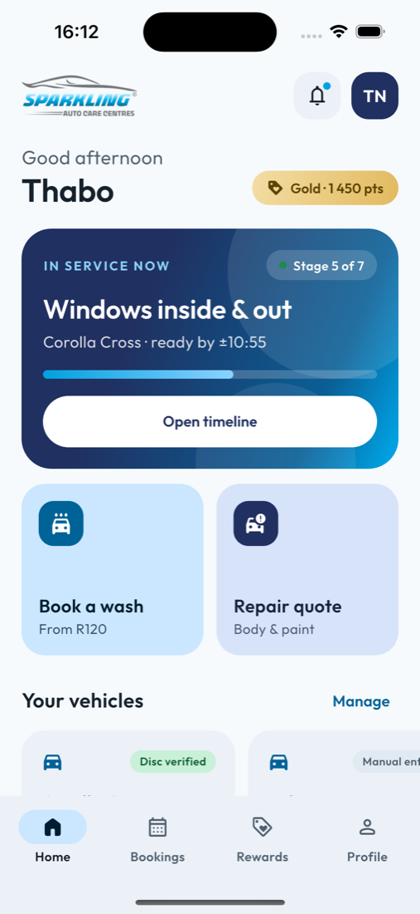
Customer app: Home, with Book a wash, Request a quote and the garage.
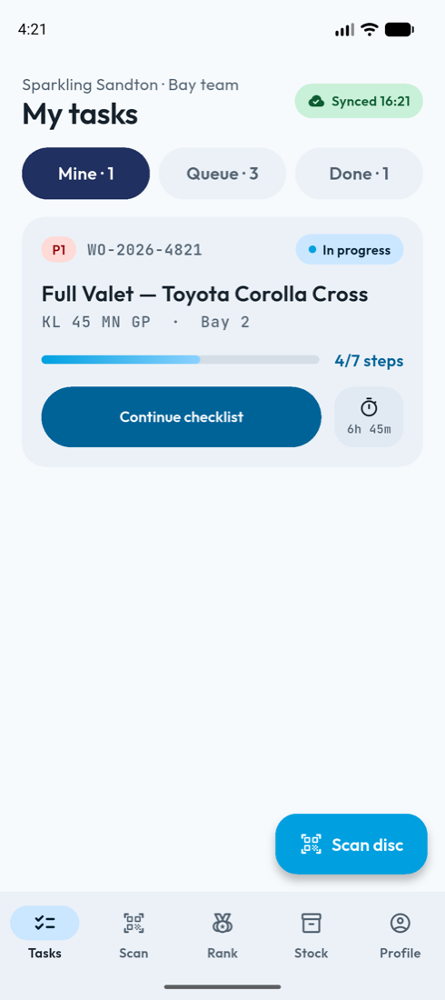
Staff app: My tasks for the day at the technician’s outlet.
2. Downloading and running the shared APKs
Two Android installer files (APKs) are shared for the beta. Both already point at the live Sparkling system, so there is nothing to configure on the phone.
App
Name on the phone
Needs
Customer app
Sparkling
Android 6.0 or newer, internet, camera (for disc scanning)
Staff app
Sparkling Staff
Android 6.0 or newer, internet (keeps working offline after the first sign-in), camera (for disc scanning)
Installing on an Android phone
Open the shared link on the phone (WhatsApp, e-mail or Drive) and download the APK. Chrome may warn that “this type of file can harm your device”; choose Download anyway.
Tap the downloaded file (from the notification or from Files → Downloads).
When the phone says it is not allowed to install unknown apps from this source, tap Settings, switch on Allow from this source, then go back.
Tap Install. If Google Play Protect asks to scan the app, allow it; if it says the app is from an unknown developer, choose Install anyway (it is an internal beta, not a Play Store app).
Tap Open. On first launch allow notifications (booking and hand-over updates) and, when you scan a disc, the camera.
Updating to a newer build. Install the new APK over the old one; your sign-in is kept. If the phone refuses with “app not installed”, uninstall the old copy first and install again. Beta builds cannot be updated automatically by the Play Store.
iPhone users. APK files are Android only. iPhone builds of both apps exist but are shared separately; ask the project owner.
First run
Customer app: you land on the sign-in screen. Tap Create account or Continue with Google (section 6).
Staff app: you land on “Outlet staff sign in”. Use the e-mail and temporary password your manager gave you (section 3). A personal or customer account will be refused.
Both apps show their version on the profile screen; quote it when reporting a problem.
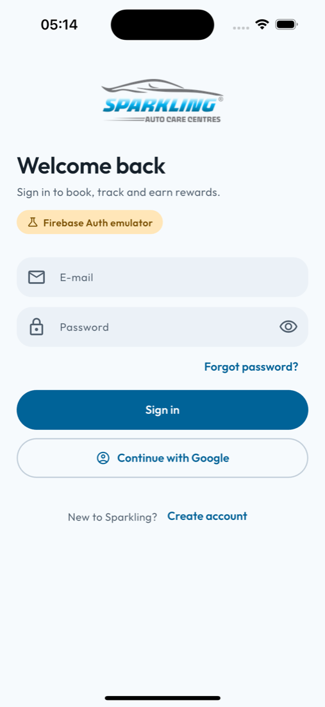
Customer app on first run: Welcome back / Create account.
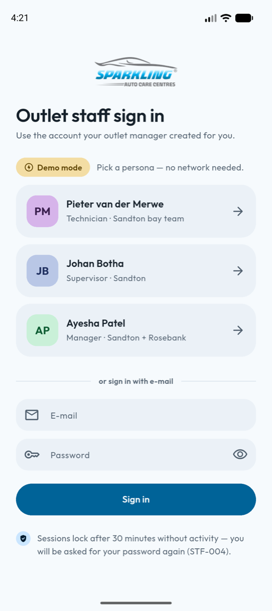
Staff app on first run: Outlet staff sign in.
3. Adding staff users and signing in on the Staff app
Staff never register themselves. An admin creates each account in the Admin dashboard, and the system sets up the sign-in, the role, the outlet assignment and a one-time temporary password in a single step.
How a staff user is added (Admin dashboard)
Sign in to the Admin dashboard as an admin and open Staff → Users.
Click Add staff member and fill in: full name, work e-mail (this becomes their login), mobile number (optional), role (technician, supervisor, manager, finance or admin), the outlet(s) they work at (the first one chosen is their home outlet) and optional skills used when work is handed out.
Click Create. A Credentials box shows the e-mail and a temporary password starting with Spk-. It is shown only once; copy it and hand it to the person privately, or use Send these details.
The person appears in the list with a Must change password badge until they finish their first sign-in.
The Credentials box with the one-time temporary password.
Everyday management
Edit (pencil) to change role, outlets, skills, name or phone. The change applies the next time the person opens the app, at the latest within an hour.
Reset password (lock icon) issues a fresh temporary password, signs the person out of every device and makes them choose a new password at the next sign-in. Use it when someone is locked out.
Deactivate (switch in the editor) blocks sign-in immediately; the record stays for the audit trail. Reactivate the same way.
Admins cannot deactivate or demote themselves. Managers can view the list but only admins can add, edit or reset.
Signing in on the Staff app
1 · Sign inEnter the work e-mail and temporary password, or tap Continue with Google if the work e-mail is a Google account.
2 · CheckOnly staff accounts are let in. A customer account sees “This account is not an outlet staff account. Ask your manager to add you as staff…”.
3 · Choose a passwordOn a temporary password the app opens Choose your password: enter the temporary one, then a new one of at least 10 characters with a letter and a digit.
4 · WorkThe day’s tasks for your outlet(s) load. The temporary password stops working once the new one is set.
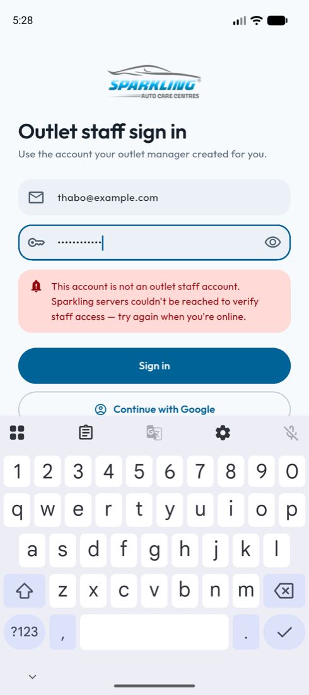
2 · A non-staff account is refused with a clear message.
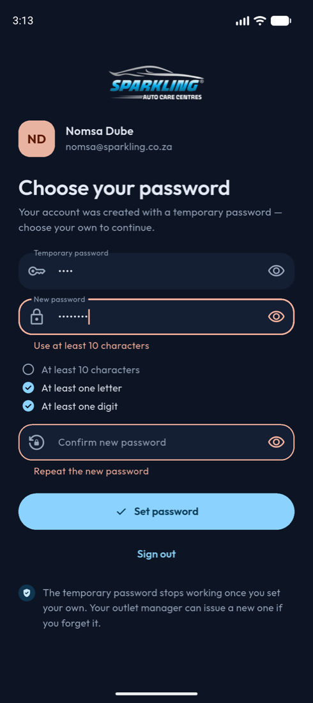
3 · Choose your password after a temporary password.4 · My tasks for your outlet once you are in.
The staff app locks after 30 minutes without activity; unlock with your password or Google.
Once signed in, the app keeps working without signal; what you do is sent when the connection returns.
A technician sees only tasks at their own outlet(s). Supervisors and managers also get the floor overview, leaderboard and stock views for their outlets.
4. Outlets: how they are managed and how they work
An outlet is one physical Sparkling site. Everything hangs off it: staff belong to outlets, customers book at an outlet, each outlet has its own services and prices, and quotations print the outlet’s company details.
Open Config and choose the Outlets tab. Managers and finance can view the list; only admins see New outlet and can edit (pencil).
In the editor capture:
Identity: a short code (e.g. MEN), name, address, city, province, phone and e-mail.
Capacity: number of bays and the booking slot length in minutes. Together these decide which time slots customers can book.
Opening hours: open and close time for each day, or closed. Customers cannot book on a closed day.
Legal & banking: legal name, trading-as, company registration number, VAT number, registered office and bank account. The list shows “Not captured” until this is filled in, because quotations print it.
Active switch: an inactive outlet disappears from the customer app but keeps its history.
Open the outlet’s Catalogue to choose which services it offers and at what price: add services from the shared service list, set small/large vehicle prices, mark add-ons, or Copy prices from outlet to clone another outlet’s price list.
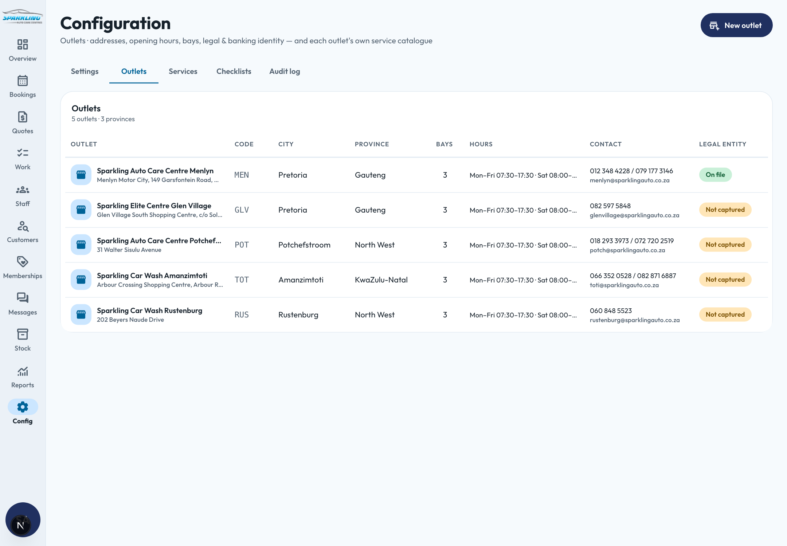
Config → Outlets: the five outlets with code, city, bays, hours, contact and whether the legal entity is captured.
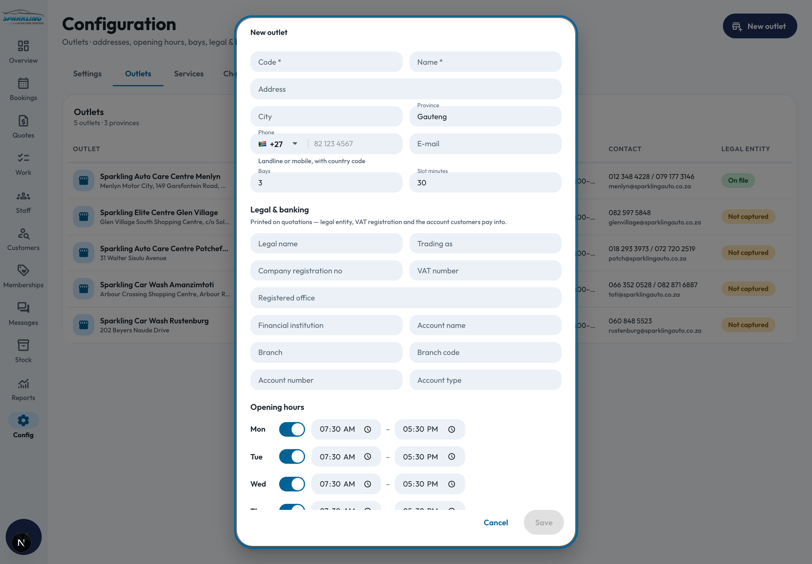
New outlet: identity, bays and slot length, legal & banking, opening hours.
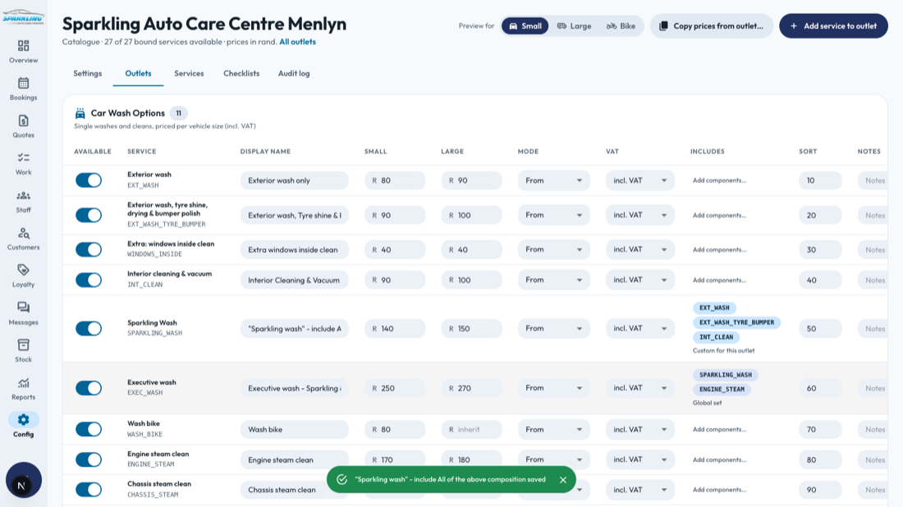
An outlet’s Catalogue: which services are available here, their display names and small/large prices.
How outlets tie everything together
Staff see their own outlet
Each staff member is linked to one or more outlets when their account is created. The Staff app and the dashboard only show them bookings, tasks, stock and quotes for those outlets. Admins and finance see all outlets.
Customers see active outlets
The customer app lists every active outlet with its rating. When the phone’s location is on, the nearest outlet is suggested first.
Slots come from the outlet’s settings
Available times are worked out from the outlet’s opening hours, slot length and number of bays, minus bookings already taken. A booking always belongs to exactly one outlet and one time slot.
Prices come from the outlet’s catalogue
A service can cost different amounts at different outlets. The customer always sees the prices of the outlet they chose, for the size of the car they chose.
5. Admin users and who can sign in on the Admin dashboard
Adding an admin user
Admin users are created exactly like staff users (section 3): Staff → Users → Add staff member, choosing the role admin, manager, finance or supervisor. They receive the same one-time temporary password and must change it on first sign-in. There is no separate “admin account” type; the role is what opens the dashboard.
The first admin. Someone must already be an admin to create others. The project owner sets up the first admin account when the system is installed; from then on, every further admin is created in the dashboard.
Who can sign in on the Admin dashboard
Role
Can sign in?
What they can do
admin
Yes
Everything: outlets, services and prices, staff accounts, loyalty settings, system settings and message templates.
manager
Yes
Run their outlets day to day, view staff and customers, draft loyalty changes, memberships, staff performance, resend messages. Cannot create accounts or outlets.
finance
Yes
View only: outlets, services, customers, payments, reports, exports and the audit trail.
supervisor
Yes
Operational views for their outlets (bookings, work, quotations).
technician
No
Sees a Not authorised page explaining the dashboard is for managers, admins, finance and supervisors, with a Sign out button.
customer
No
Same Not authorised page.
Signing in
Open the dashboard address in a browser (Chrome, Safari or Edge). It works on a phone but is designed for a laptop.
Enter your e-mail and password, or click Continue with Google if your work e-mail is a Google account.
If you were given a temporary password you are taken to Set a new password first and cannot open any other page until it is done.
A deactivated account is signed out everywhere within the hour and cannot sign in again until reactivated.
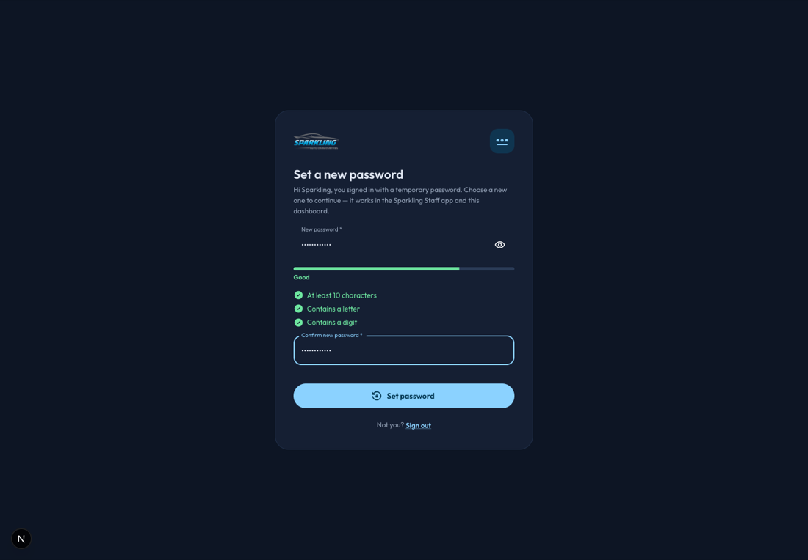
First sign-in with a temporary password: Set a new password.
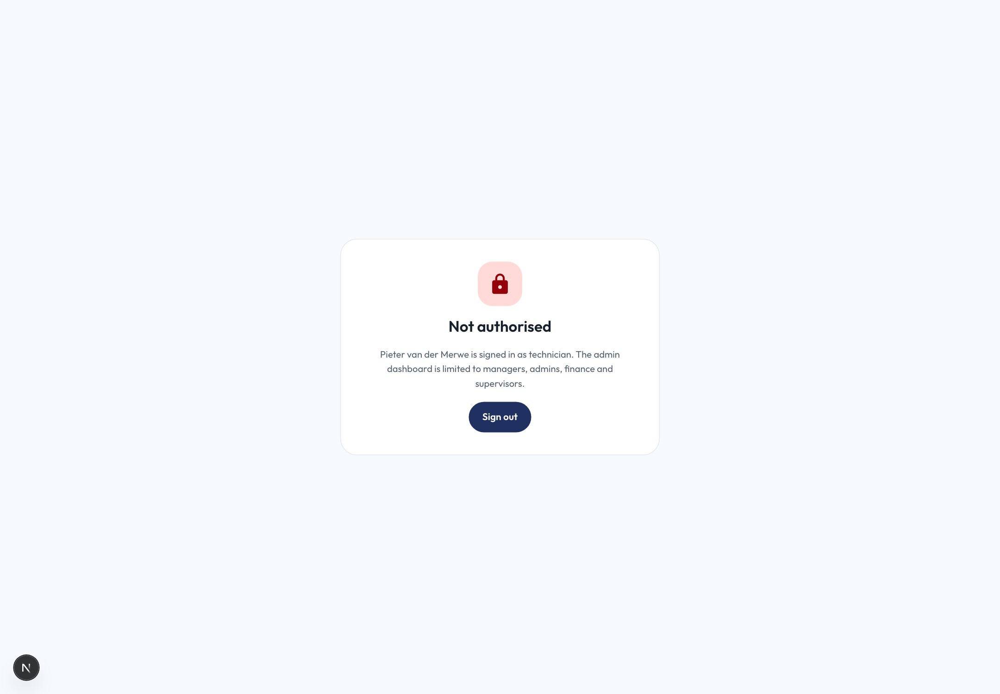
A technician who signs in sees Not authorised.
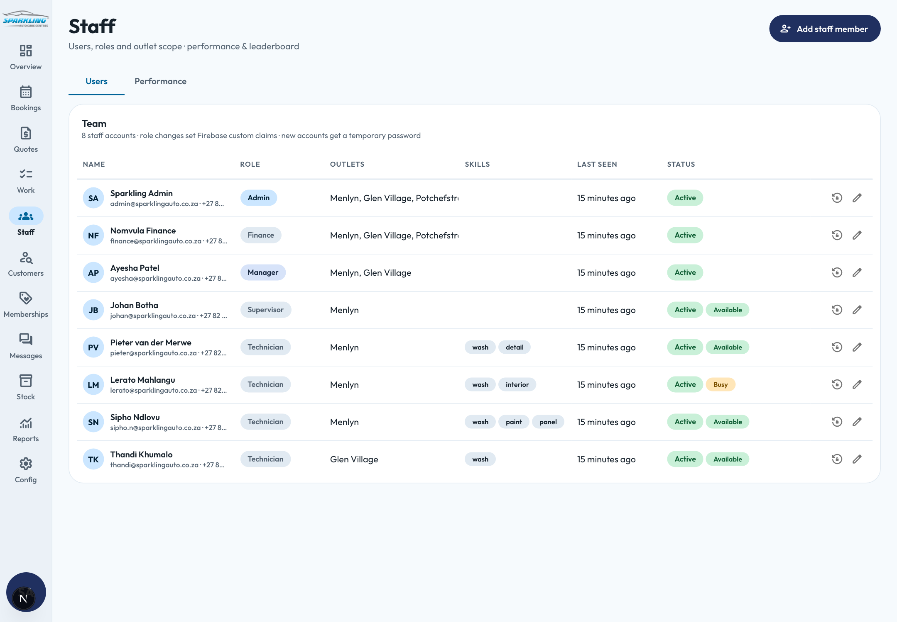
Staff → Users: every staff and admin account with role, outlets, skills and status.
Every change made in the dashboard is recorded in Audit with who did it, what changed and when.
6. Customers: signing in and placing an order at an outlet
Creating an account and signing in
Create account: name, e-mail, password (8+ characters) and an optional “Send me offers and news” tick. The account works immediately; no approval is needed.
Continue with Google: one tap, same result.
Forgot password? sends a reset link by e-mail. Customers reset their own passwords; admins cannot do it for them.
If the customer was first captured at the counter as a walk-in with the same e-mail or mobile number, signing up links that history, so earlier bookings and loyalty points appear.
Welcome back: e-mail + password, Google, or Create account.
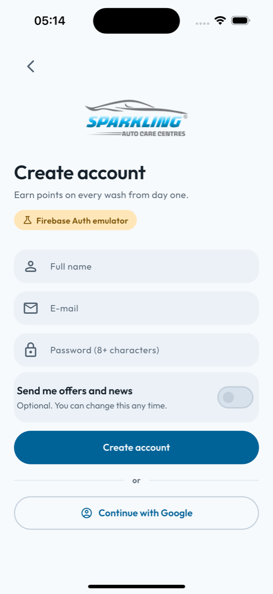
Create account: name, e-mail, password and the offers tick.Home after signing in: Book a wash, Request quote, your vehicles.
Booking (ordering) a service
From Home tap Book a wash. The order takes three steps and is tied to one outlet from the first step:
Step 1 · Outlet, car and serviceThe outlet chip opens a list of outlets with rating and distance (nearest pre-selected). Pick a car from your garage; prices then show for that car’s size. Choose a service and any add-ons from that outlet’s own list.
Step 2 · Date and timeA calendar shows the outlet’s open days; closed days say “Choose another date”. Time slots follow the outlet’s slot length and number of bays.
Step 3 · Review and payPay by card or instant EFT on the secure payment page, choose cash on collection, or confirm at no charge if the service is included in your membership plan. Points to be earned are shown.
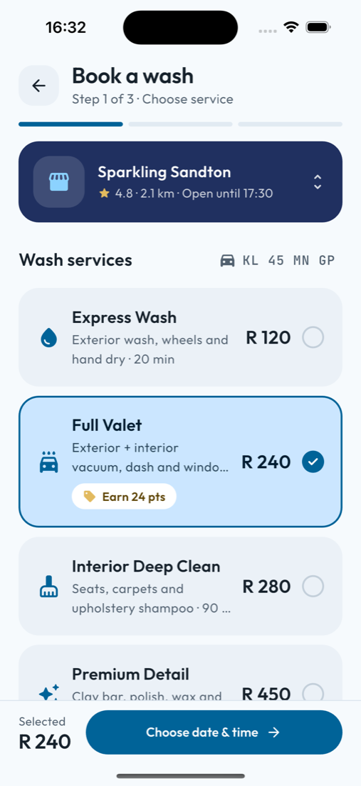
Step 1 of 3: outlet, car and service with prices for that car.
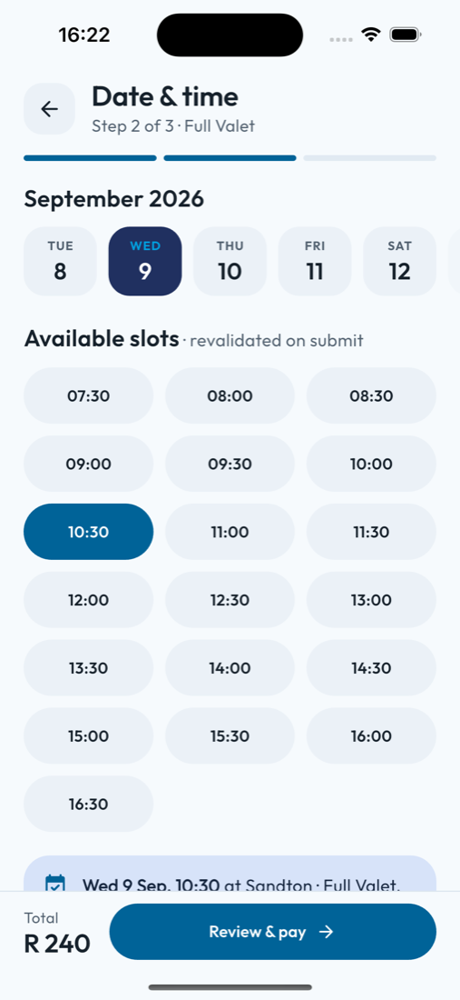
Step 2 of 3: date and available slots at the outlet.
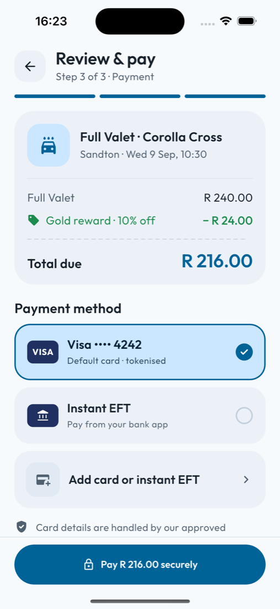
Step 3 of 3: review and pay (card, instant EFT or cash on collection).
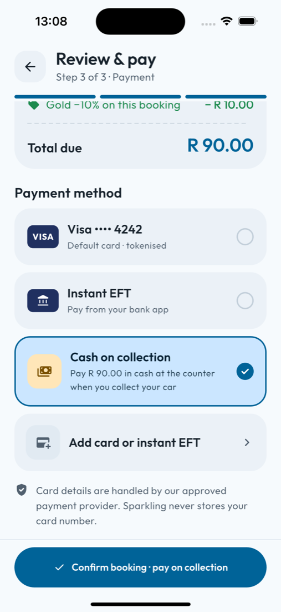
Cash on collection: pay at the counter when you fetch the car.
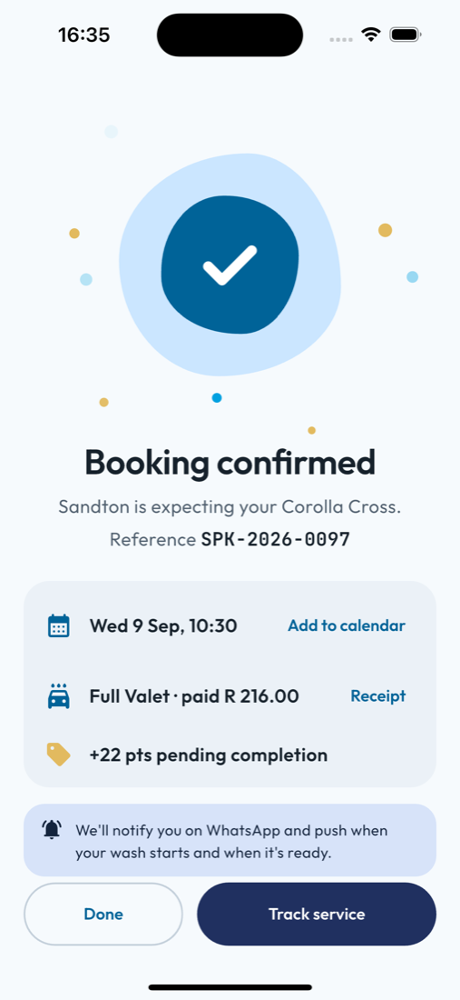
Booking confirmed, with the outlet, car, time and receipt.
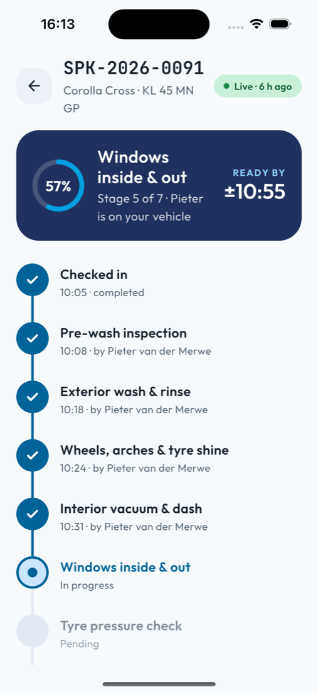
Tracking: live progress through the outlet’s checklist.
After Confirm the booking is placed at that outlet. It shows under Bookings with live status (confirmed → in service → completed) as the outlet’s staff check the car in and work through the checklist.
Notifications arrive when a quote is ready, when the car is ready and when the keys are handed over. Collection uses a one-time code shown in the app.
An unfinished booking is kept as a draft on the phone and restored next time. Cancel or move a booking from its detail page while it has not started.
For body-work, customers can instead Request a quote with photos; the outlet assesses it, sends the quotation, and once accepted it becomes a job at that outlet.
7. Spotlight: adding a car by scanning the licence disc
Why it matters. Every South African licence disc carries a barcode with the registration, make, model, colour, VIN, engine number and expiry date. Scanning it fills in the car in seconds, avoids typing mistakes, and marks the car as disc-verified, which lets it skip the check-in queue at the outlet.
Step by step (Customer app)
Open Garage (or tap Add vehicle when prompted during booking) and choose Scan licence disc.
Allow camera access when asked.
Point the phone at the disc on the windscreen and line the barcode up inside the frame. Hold steady; the disc is read on the phone itself, even without signal. Good light helps on faded discs.
When the app shows Disc decoded — opening review…, the Confirm vehicle screen appears with the registration, make, model, colour, VIN, engine number and disc expiry filled in. Details taken from the disc are locked (“From the disc — not editable”); you can add a nickname and check everything.
Tap Save. The car appears in your garage with a verified badge.
If scanning is not possible
Import a photo instead: if the car is not with you, pick a photo of the disc from the gallery; the same reader runs on the picture.
Enter details manually: registration, make and model by hand. The car is saved but stays unverified until a disc is scanned later.
Could not read the disc: a message offers Retry, a sharper photo, or manual entry. A damaged or dirty barcode is never guessed; nothing is saved from an unreadable scan.
Expired disc: the review screen flags it so the customer can renew; the car can still be saved.
Already in your garage: if the registration or VIN matches a car you already have, the app says so and offers Update existing vehicle or Add as a separate vehicle, so there are no duplicates.
No camera (e.g. a tablet): the app explains and offers photo import or manual entry.
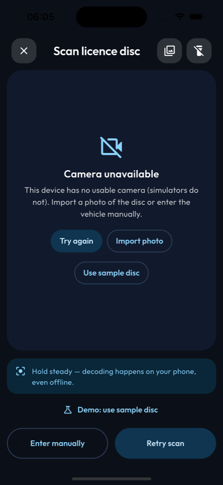
Scan licence disc with the fall-backs: Try again, Import photo, Enter manually. (Shown here on a device without a camera.)
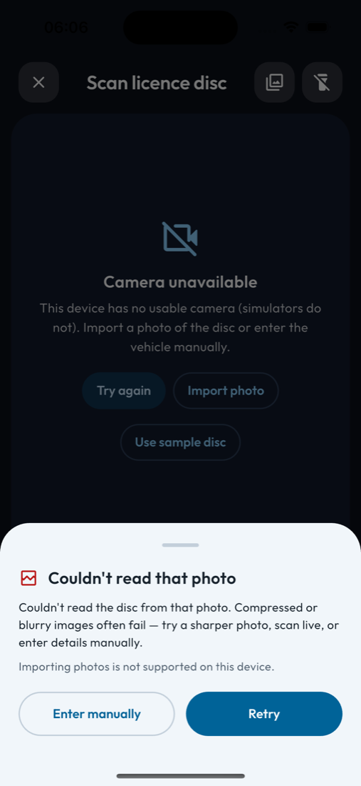
“Couldn’t read that photo”: retry with a sharper picture, scan live, or enter the details.
Good to know
Only the licence-disc barcode is read, nothing else on the windscreen.
The details are checked before they are shown, and checked again when the car is saved, so a bad scan can never create a wrong car.
The barcode itself is not kept; only the car details and the expiry date.
Outlet staff have the same scanner in the Staff app for capturing a customer’s car at the counter.
8. Quick reference: who signs in where
I am a…
Which app
How my account is created
How I sign in
Customer
Sparkling (customer app)
Myself: Create account or Google
E-mail + password, or Google
Technician
Sparkling Staff
An admin adds me under Staff → Users with my outlet(s)
Work e-mail + temporary password, then my own (10+ characters, letter + digit)
Supervisor / Manager
Sparkling Staff and Admin dashboard
Same as technician, with role supervisor or manager
The same details work on both
Finance
Admin dashboard
An admin adds me with role finance
E-mail + password, or Google
Admin
Admin dashboard (and Staff app if needed)
Another admin adds me; the project owner sets up the first admin
E-mail + password, or Google
Common problems
What you see
Why, and what to do
Staff app: “This account is not an outlet staff account”
The e-mail has no staff role. An admin must add it under Staff → Users (or change the role of the existing account).
Admin dashboard: “Not authorised”
Signed in as a technician or customer. Only manager, admin, finance and supervisor roles may enter.
“Couldn’t reach Sparkling servers”
No internet or the system is briefly unavailable. Tap Retry; staff who have signed in before can keep working offline.
Temporary password rejected
It was already replaced, or a reset was issued since. Ask an admin for Reset password.
Outlet missing in the customer app
The outlet is switched to inactive. Check the Active switch in Config → Outlets, and that its Catalogue has the service.
No time slots on a date
The outlet is closed that day, or all bays are booked. Adjust opening hours or bays in Config → Outlets.
APK will not install over the old one
Uninstall the previous beta first, then install the new one.